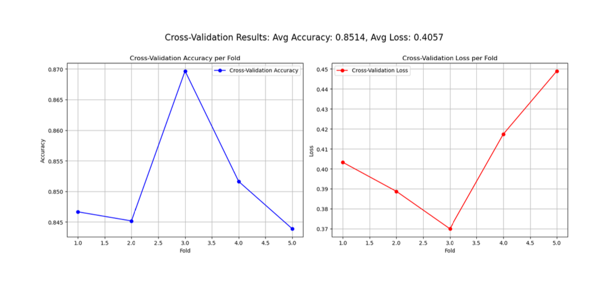
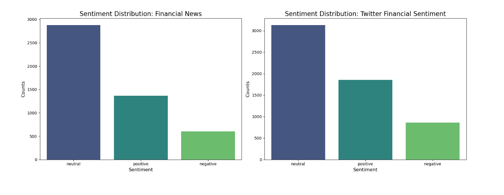
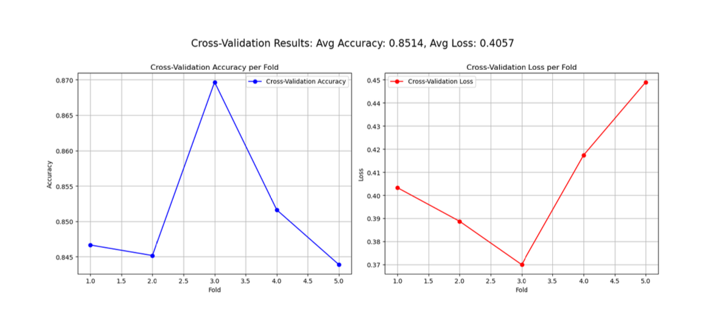
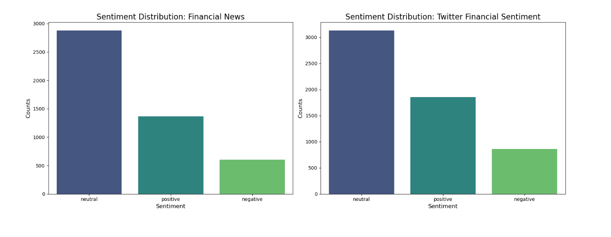
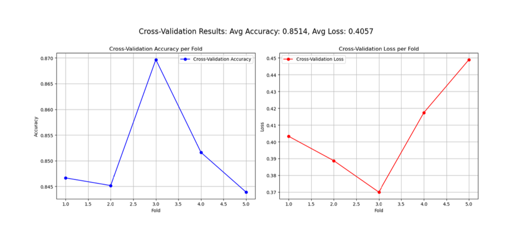
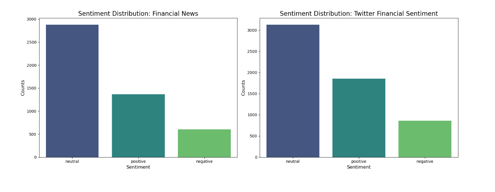

Results
Below are some visualizations showcasing the results of our sentiment analysis:
 




Understanding market sentiment is critical to making informed financial decisions. Sentiment analysis, especially in the context of financial news and social media, has gained increasing relevance as financial markets are often driven by sentiment and speculative behavior. Sentiment shifts can influence everything from stock prices to investor confidence.
In fact, according to the 2023 J.P. Morgan Long-Term Capital Market Assumptions, sentiment plays a significant role in driving market volatility and long-term trends.
This project leverages state-of-the-art natural language processing (NLP) techniques, specifically DistilBERT, to classify financial sentiment from news articles and Twitter data. Our goal is to explore how sentiment can be effectively captured and analyzed to provide insights into financial trends.
"Sentiment analysis helps investors cut through the noise of media hype and gain a clearer view of market trends." - Financial Times
Our sentiment analysis was built using two comprehensive financial datasets:
These datasets provide a diverse set of opinions from both professional financial analysts and the general public on social media, enabling us to build a more comprehensive sentiment model.
Below are some visualizations showcasing the results of our sentiment analysis:


Our Financial Sentiment Analysis uses DistilBERT, a condensed version of BERT (Bidirectional Encoder Representations from Transformers), which is a state-of-the-art model for text-based tasks. DistilBERT retains 97% of BERT’s language understanding while being 60% faster and using 40% fewer parameters, making it ideal for sentiment analysis on large-scale text data.
DistilBERT uses transformer-based layers to process the text bidirectionally. It captures word context more effectively than traditional machine learning methods, leading to more accurate sentiment classification. The model was pre-trained on a large corpus of text data and fine-tuned using the financial sentiment datasets to adjust to the unique language and tone used in financial discourse.